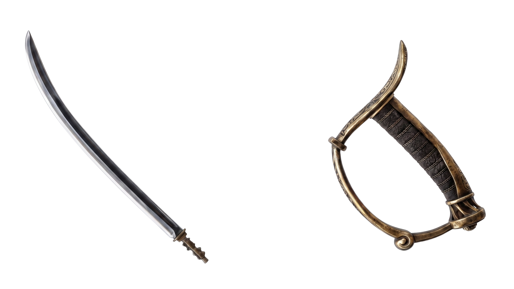
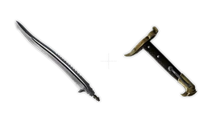
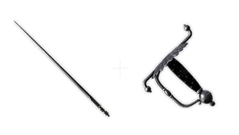
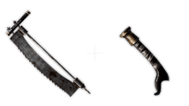
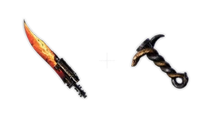
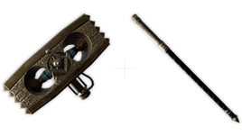
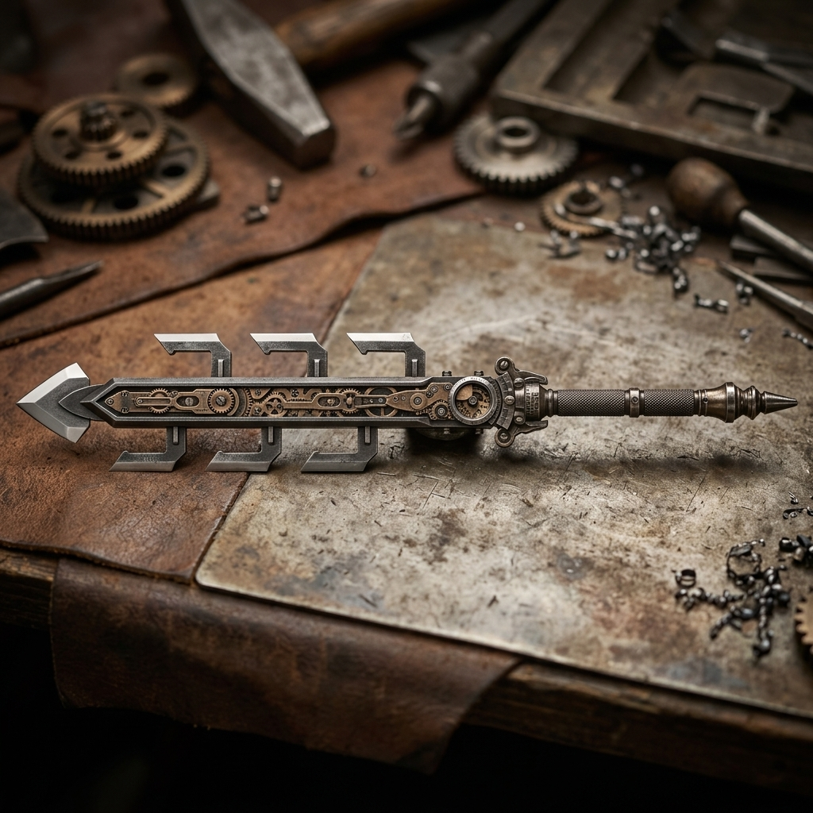
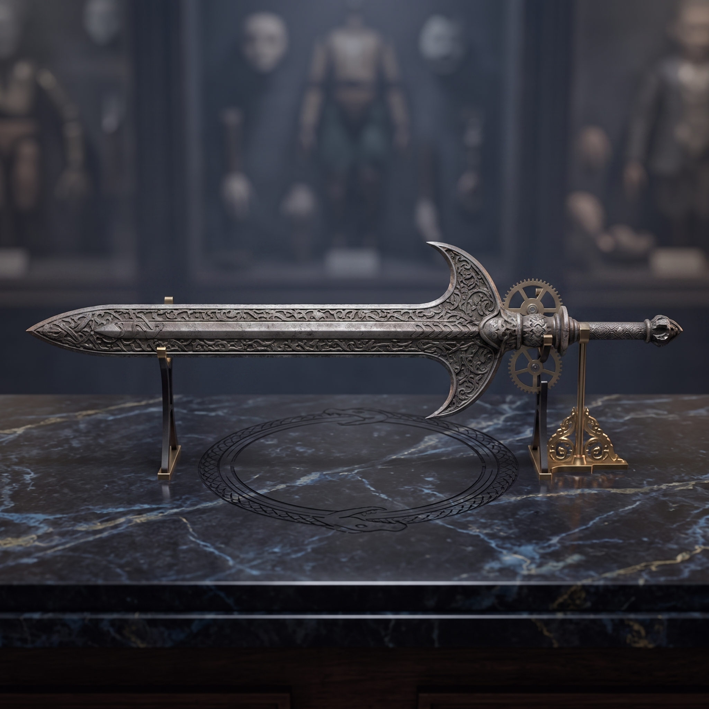
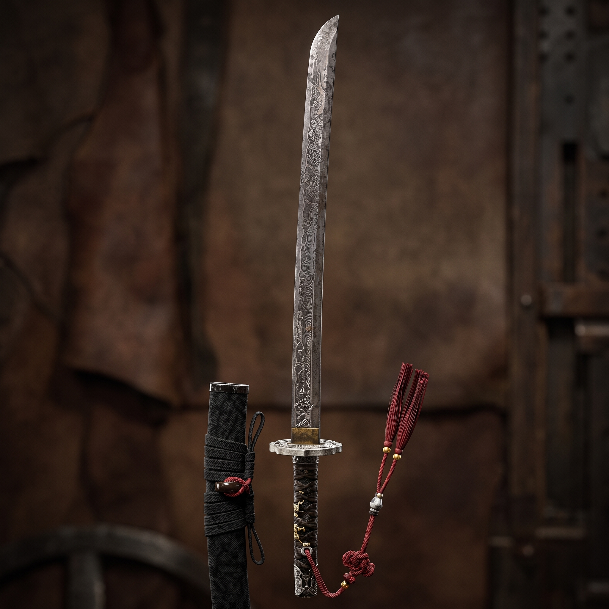

Arsenal of Krat
Starter Weapons
The three initial weapons that define your combat style at the start of the game.

Puppet's Saber
Path of the Cricket (Balance)
Greatsword of Fate
Path of the Sweeper (Motivity)
Wintry Rapier
Path of the Bastard (Technique)Normal Weapons
Weapons that can be found throughout the game and can be disassembled (Blade and Hilt).

Bone-Cutting Saw
Motivity
Salamander Dagger
Advance / Fire
Coil Mjolnir
Motivity / Electric BlitzSpecial Weapons
Unique weapons forged by Alidoro using rare Ergos from the bosses. Cannot be disassembled.

Seven-Coil Spring Sword
Motivity
Holy Sword of the Ark
Motivity